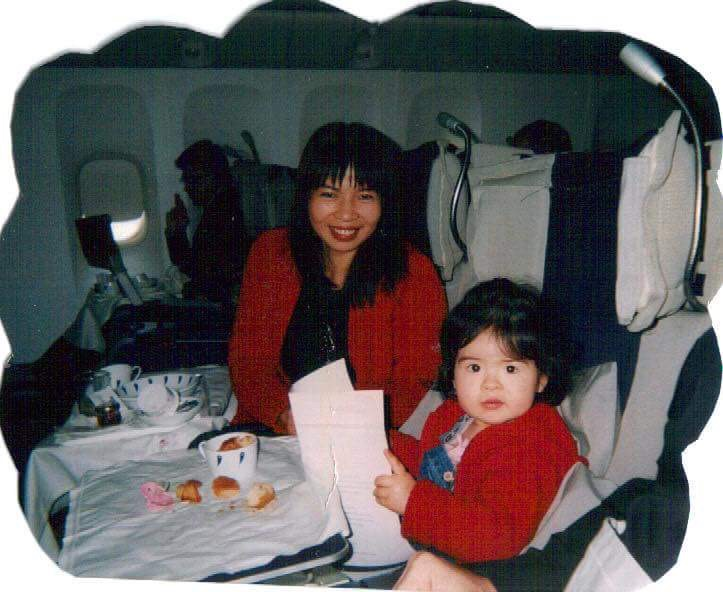
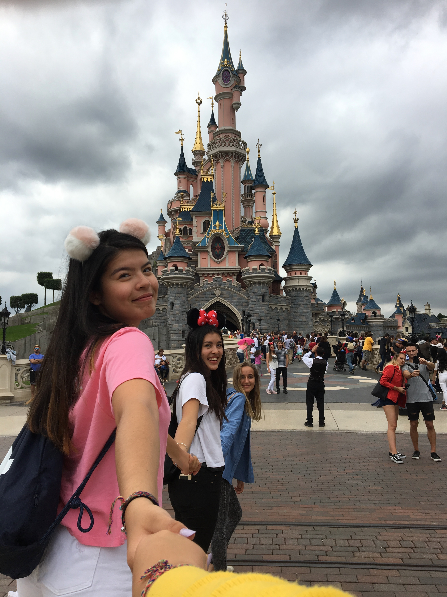
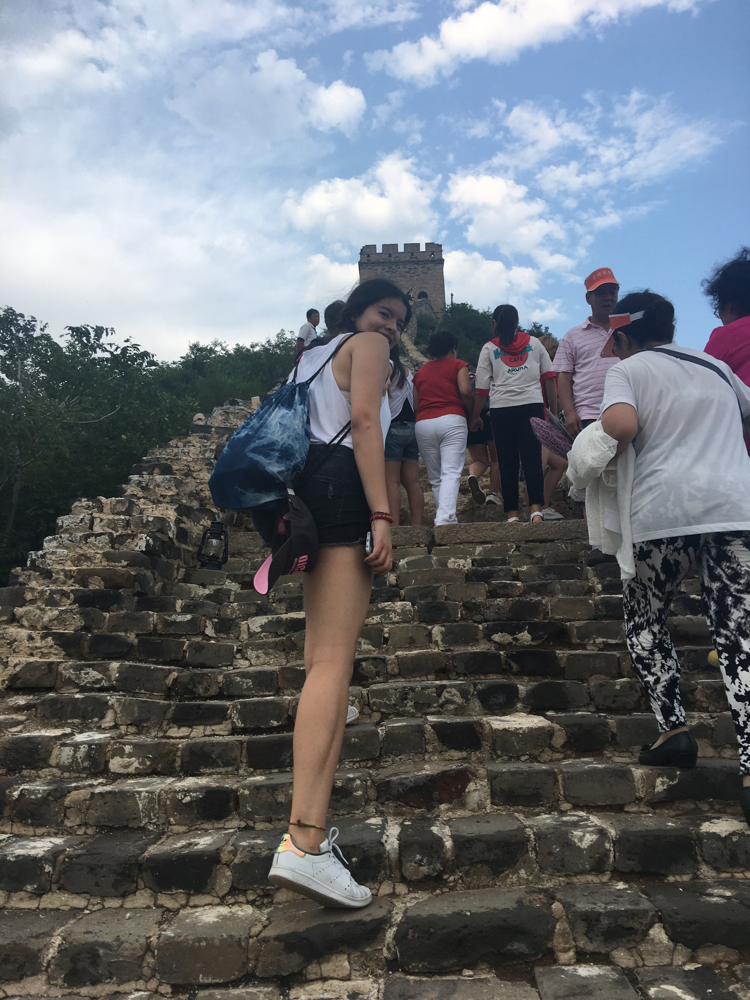
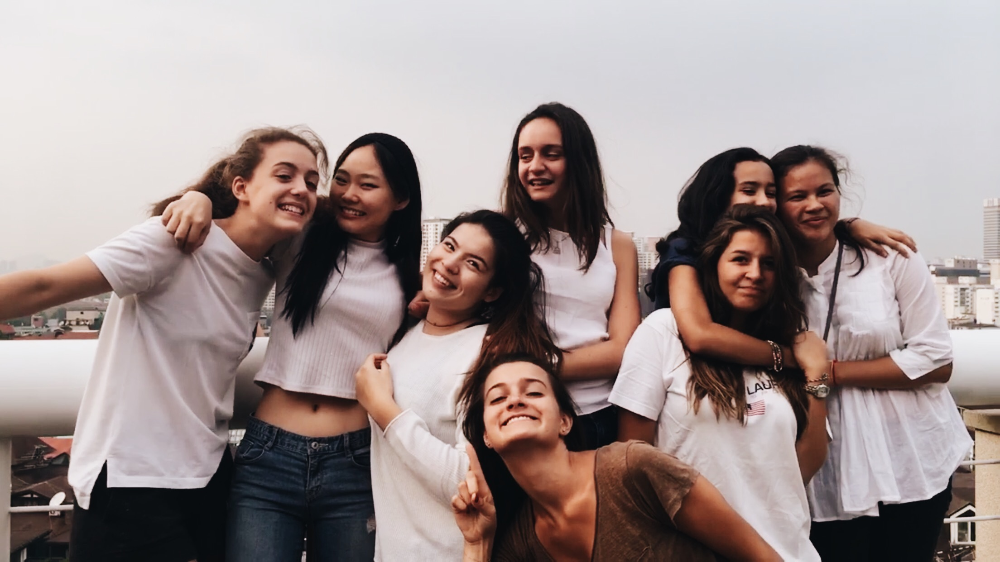
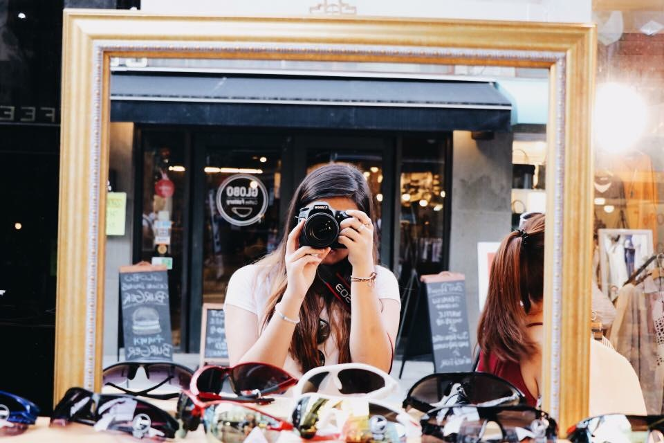
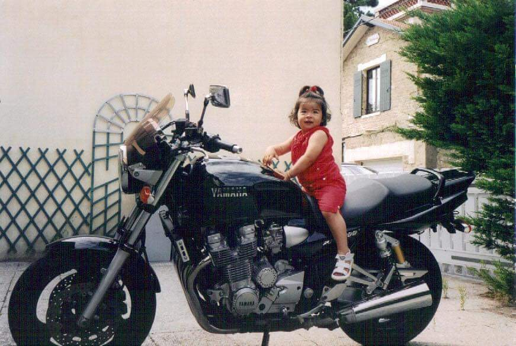

Hello I'm Amandine Doria 😎

Currently pursuing a Business Administration degree at ESSEC Business School, I have acquired knowledge of the business world and excellent communication skills.
My childhood
I was born in Toulouse, France. You might think that this is where I grew up. But as soon as I blew my first candles, I hopped on a plane and was ready to travel the world. I grew up in many cities, all the way from Bangkok to London. This was my new normal.
France
Technically, my home town is France. My dad is french and I have the french passport. I go there every summer but I've lived longer abroad than in France. I sometimes feel like a stranger there. My last year of highschool I went back to Paris, I learned a lot about my home country.
China
I also have chinese roots. My mom is chinese. So this makes me eurasian. I am aware of how lucky I am to be in touch with 2 cultures that are so different from each other. I've learned respect and wisdom from the chinese. I visit my family there every year. I am a stranger to them because of my caucasian way of doing things.
Friends
From living all over the world, I have learned that making friends is extremely important. Being far away from family, you to surround yourself with friends that you can trust. It's a way to feel at home. To this day, i still talk to these amazing people that I met all around the world.
Photography
One of my passions is photography and videography. I've always been that girl who can draw really well. I am someone that's very creative and artistic. Making me a person that enjoys creating content. I would often film moments spent with my friends to create a visually opleasing video.
Click here to watch one of my created short videosMotorcycles
My dad is a huge fan of Harley-Davidson. He has always owned a motorcycle. It's as if I was raised on one! So naturally, I became extremely curious about motorcycles and everything that has to do with it. As a family we would attend the motorcycle festival called Burapa in Pattaya every saingle year. When I'll be older, I want to purchase a Ducati, the 2021 Monster in a matte black to be more precise.